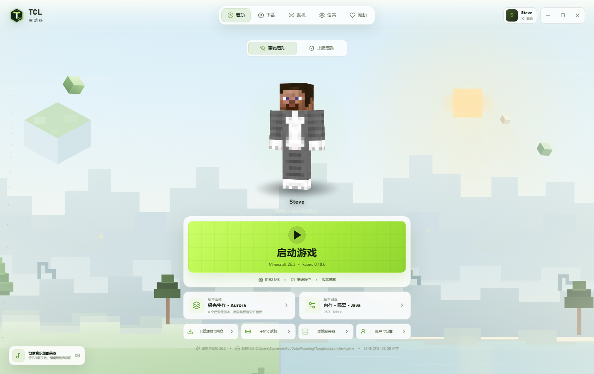

版本与加载器
Vanilla、Fabric、Quilt、Forge、NeoForge，自动匹配游戏版本与依赖。

Vanilla、Fabric、Quilt、Forge、NeoForge，自动匹配游戏版本与依赖。
中文译名搜索、依赖自动安装、版本隔离，装坏一个不影响其他存档。
e4mc 联机、Fabric / Paper 服务端创建，地址与端口一眼可见。
离线账号与微软正版登录，皮肤上传、3D 预览、披风显示。
Electron 运行环境已打包，不联网下载运行时，不写系统目录。
默认白色主题，内置极光、绯红、末地、霜原等多套方块背景。
上方选择的版本会同步到这里。所有版本都放在 GitHub Releases，不占用仓库普通文件空间。
完整 Electron 运行时 · 约 106 MB · 2026.10.26
前往 GitHub Release 下载下载后解压，双击根目录里的 exe。历史版本使用旧品牌与旧界面，仅用于回退。
点击任意版本即可切换到对应下载。建议普通用户使用最新版；旧版本保留原样，方便回退或收藏。
地址 mkzy.9666.fun:30049
无规则 · 允许矿透 · 禁止外挂
官方 QQ 群 491860123